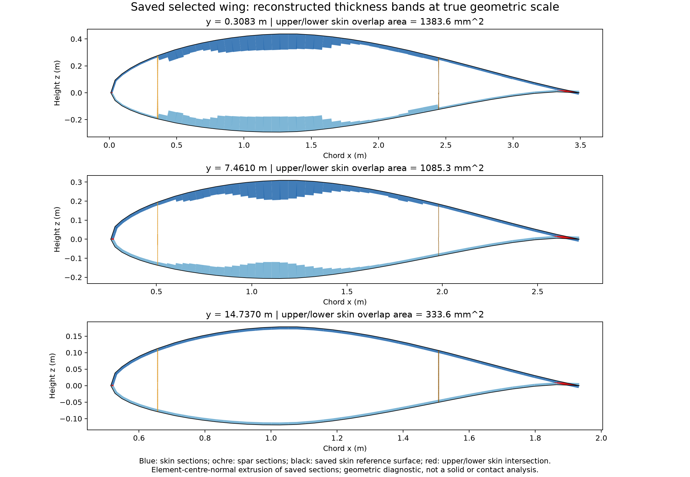
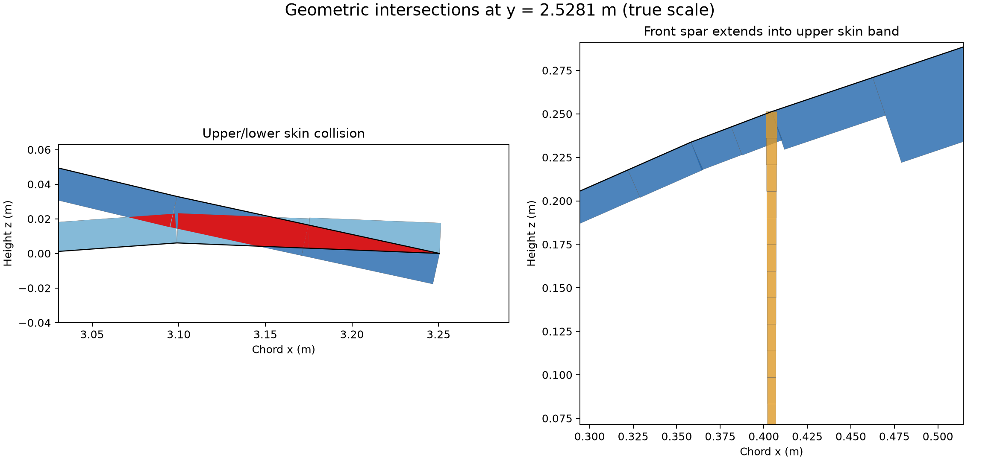

Selected 16-rib fine wing, final buckling iteration 032. Geometric postprocessing only; no new aerodynamic, static or buckling solve, no manuscript changes.
The maximum-thickness skin panels have room in the deep inboard section. The complete untrimmed finite-thickness reconstruction does not form a non-overlapping assembly: skin bands intersect near sharp closures and the full-depth spar/rib reference surfaces extend into skin thickness bands.
| Component | Each face (mm) | Core (mm) | Total (mm) | Offset |
|---|---|---|---|---|
| Upper skin | 0.250-8.948 | 6.982-100.000 | 7.482-117.895 | BOT |
| Lower skin | 0.250-7.938 | 6.912-100.000 | 7.412-115.876 | BOT |
| Front spar | 0.250-1.631 | 2.551-14.470 | 3.051-17.732 | MID |
| Rear spar | 0.250-0.814 | 2.551-8.726 | 3.051-10.354 | MID |
| All ribs | 0.250-0.250 | 2.551-6.079 | 3.051-6.579 | MID |
All 42,216 saved section definitions were checked against the compact thickness fields and element connectivity. Skin normals point inward: the upper normals have negative vertical components and the lower normals positive components. BOT therefore places the reference nodes on the outer side of the local stack and grows thickness inward. Spars and ribs use MID, with half the thickness on either side of their reference surfaces. See ANSYS SECOFFSET and SHELL181 layer stacking.
Upper element 293 and lower element 402 share centroid plan coordinates x=1.235095 m, y=0.308305 m. Upper total = 117.895 mm (8.948 / 100 / 8.948); lower total = 115.876 mm (7.938 / 100 / 7.938). The reference airfoil depth there is 728.954 mm. The reconstructed inner-skin vertical clearance is approximately 495.043 mm. This is a local clearance check, not a statement that the entire panels or assembly fit everywhere.

Upper/lower skin intersections occur in all 110 checked bay-midpoint sections. The largest summed pairwise intersection area is approximately 1791.6 mm^2 at y=2.528102 m. The trailing-edge intersection at that section has a maximum vertical extent of approximately 17.14 mm. Close to the sharp trailing edge, inward stacks also cross the opposite aerodynamic surface. Small leading-edge intersections are visible as well.
Spars and all 16 ribs share edges with both skin reference surfaces. Their saved geometry reaches those surfaces without trimming to the inner skin boundaries. The illustrative front-spar section therefore intersects the skin band. This represents idealized shell connectivity, not a resolved finite-thickness bond, insert, flange or trimmed joint.

The 100 mm core cap alone does not make the deep inboard panels too large for the available depth. However, the saved design does not establish geometric or manufacturing feasibility of a complete sandwich assembly. A later revision can report the thickness ranges and this limitation honestly. A physically resolved design would need closure/taper and attachment details, plus geometric-clearance constraints; changing those details may require reanalysis or resizing. No such changes are made here.
Undeformed saved quadrilateral corners were extruded along each element-centre normal using the saved BOT/MID offsets, then cut by spanwise planes. Convex polygon intersections detect overlapping bands. Sections use true aspect ratios without thickness exaggeration. Centre-normal extrusion approximates warped shell geometry; discontinuities between independently sized elements remain visible. The sampled scan is sufficient to exhibit conflicts but does not certify every location, provide a CAD solid/contact model, calculate stresses in the reconstructed volumes, or validate manufacturing tolerances. The displayed overlap area is a pairwise geometric diagnostic, not an integrated material volume or mass correction.
Machine-readable values, source hashes, topology counts and the standalone postprocessing script are retained alongside this report.